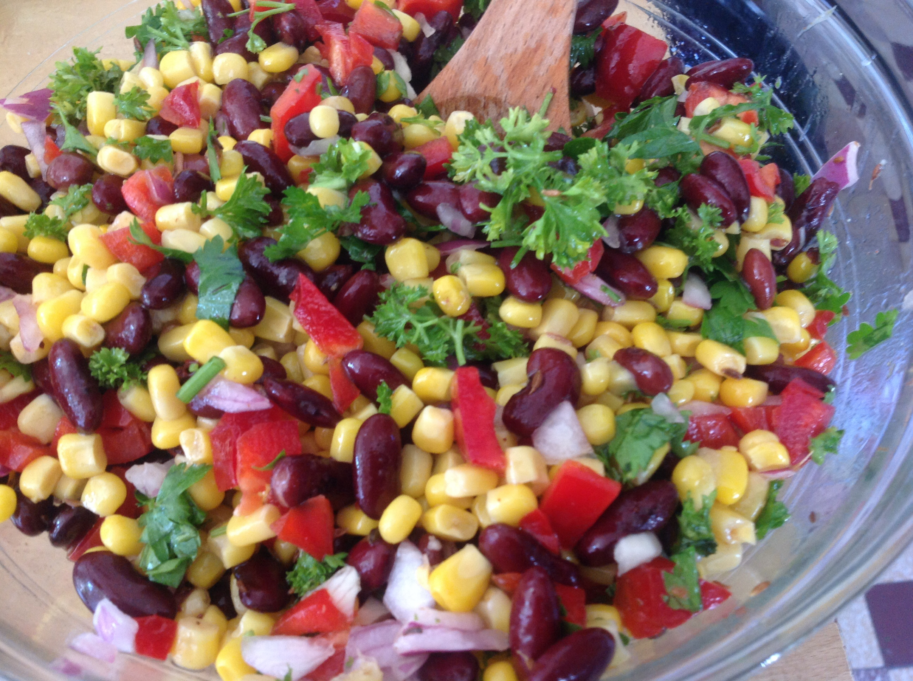

I've been a vegetarian for around 15 years. It has not been too difficult for me because I did not eat much meat to begin with, but it has been difficult to find alternative protein sources, especially when cooking at home.
In the past five years, the number of meat alternatives increased dramatically. New ingredients (such as wheat gluten, soy, and protein extracted from vegetables) have improved the texture, taste, and nutrition information.
I am not vegan and some vegans argue that some foods that I consider vegetarian are actually not such as honey. I do however not eat gelatin.
